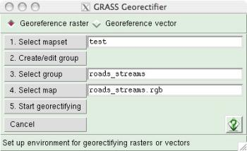
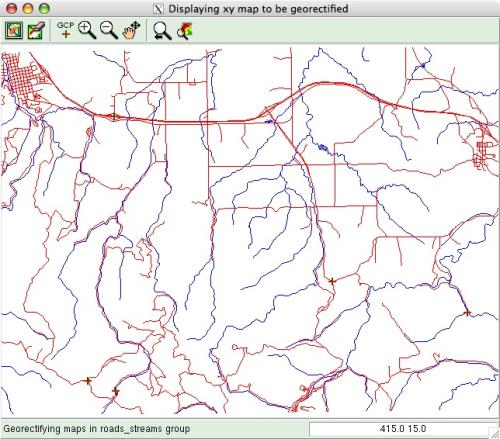
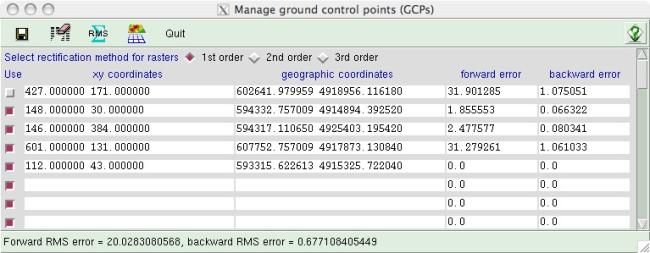

GEORECTIFY TOOL (gis.m)
In order to use and overlay different forms of geospatial data in a
GIS, they must use the same coordinate systems and be projected
identically. The Georectify Tool uses multiple GRASS modules to
georectify spatial data (map or image) that is not originally
coded in an earth-based coordinate system (e.g., latitude/longitude
or UTM). The Georectify Tool can transform the simple x/y coordinates
of the original data by shifting, rotating, and warping them as needed
for the original data to match other georectified data from the same
location on earth.
The basic procedure is to identify a set of ground control points
(GCPs) in the ungeorectified data. The georectified coordinates for the
points are identified. A mathematical transformation is calculated by
regressing the original x/y coordinates against the georectified
coordinates for the same points. This transformation is then applied to
all the data.
The Georectify Tool can georectify both raster and vector maps. Raster
maps can be transformed using 1st, 2nd, and 3rd order polynomial
transformations; vector maps are transformed only with a 1st order
polynomial transformation. The georectified coordinates of GCPs can be
entered by typing or can be extracted by clicking the equivalent
locations with a mouse in a displayed georectified map.
Using the Georectify Tool
Map Preparation
The unrectified map or image (e.g., scanned image or CAD drawing) must
be imported into a GRASS XY location.
In order to be georectified, the unrectified map or image must be added
to a imagery group.
An imagery group holds a single map/image or a set of maps/images
that represent different views of exactly the same locale.
All maps or images in a single imagery group
must be exactly aligned (e.g., as in the different spectral bands of a
multi-channel satellite image or layers of a single CAD drawing). You
can create an imagery group from within the Georectify Tool if
desired.
Setup
Restart GRASS, selecting the location/mapset where you want the map you
will georectify to END UP (i.e., the projected TARGET location).
Open any map display (or displays) that you want to use for extracting
geographic coordinates by clicking with a mouse. Make sure that the
computational region extents and resolution are set to the values you
want for the newly georectified map.
Select Georectify from the File menu.
The Georectify Tool startup lets you select the type of map to
georectify, the location/mapset of the map to georectify, the
image group of the map to georectify, and a map to use for marking
GCPs.

- click the radio button to georectify either raster or
vector maps (you can only georectify raster OR vector
maps in a single georectification session),
- select the source (XY) location/mapset of the map to be
georectified,
- if needed, create an imagery group for
the map to georectify. (the imagery group target
is automatically set
to the current location and mapset),
- select the imagery group containing
the map to georectify,
- select the map/image to display for marking GCPs
interactively (a raster or vector in the group you want to
georectify),
- click the "Start Georectifying" button
to begin marking GCPs.
GCP Marking
This opens a special map display with an ungeorectified map to use for
marking GCPs, and a GCP manager window.
The GCP map display can be zoomed and panned like a normal map display.

The GCP manager window holds the x/y coordinates and geographic
coordinates of each GCP, and displays the error for each
GCP (i.e., the distance that the actual GCP marked deviates from
its expected placement using a transformation equation).

- Click in an empty x/y entry box in the GCP manager to begin marking a
new GCP,
- Click on the ungeorectified map to mark a GCP and automatically enter
its x/y coordinates in the entry box. (Your cursor will automatically jump
to the corresponding geographic coordinate entry box for the same GCP),
- Enter the corresponding geographic coordinates for the GCP
OR click on the same place in a georectified map (in a normal map
display) to automatically extract the geographic coordinates and enter them
into the geographic coordinate entry box in the GCP manager window
(Note: use the pointer tool in the map display window)
GCP Management
Continue marking GCPs until you
have enough for an accurate georectification. At least 3 GCPs are
needed for a simple 1st order (affine) transformation that can shift
and rotate a map; at least 6 GCPs are needed for a 2nd order
(polynomial) transformation that will do simple warping in addition to
shifting and rotating; at least 10 GCPs are needed for a 3rd order
(polynomial) transformation that will do complex warping.
Any
GCP can be edited by typing new values or by selecting the appropriate
entry box and clicking on the GCP-marking display or georectified map
display.
GCPs can be excluded and not used for calculating the
transformation equation or the total RMS error by unchecking the box in
the "use" column at the left of each GCP entry line. Only active GCPs
(i.e., with the "use" box checked) will be used for computing the
georectification and total error.
You can delete all inactive GCPs
(i.e., with unchecked "use" boxes) by clicking the eraser tool in
the GCP manager tool bar.
Total RMS (root mean square) error
is calculated from all active GCPs. Click the RMS tool
in the GCP manager tool bar to update the total RMS error after
changing or including/excluding a GCP. Excluding a GCP with an
especially high individual error can reduce overall RMS error, but will
also change the individual errors of all other GCPs. The lower the RMS
error, the more accurate the final georectification will be.
All active GCPs can be saved to a POINTS file, associated with the
imagery group for the map(s) to be georectified. If a saved
POINTS file exists, prior to a georectification session the GCP
values in the POINTS file will automatically be entered into the
GCP manager window when a georectification session is started.
Georectification
When you are satisfied with your selection of GCPs and RMS error...
- Select the type of georectification you want to perform (1st, 2nd, or 3rd
order for rasters; 1st order only for vectors). Remember, at least 3
points are needed for 1st order georectification, 6 points for 2nd
order, and 10 points for 3rd order.
- Press the Georectification button on the GCP manager tool bar.
Depending on the number of cells in a raster map or nodes in a vector map,
georectification may take some time.
SEE ALSO
gis.m manual
gis.m: ANIMATION TOOL
gis.m: PROFILE TOOL
i.points
i.vpoints
i.rectify
g.proj
g.setproj
m.proj
r.proj
v.proj
AUTHORS
Michael Barton, Arizona State University, Tempe, Arizona, USA
Last changed: $Date$
Main index - Full index